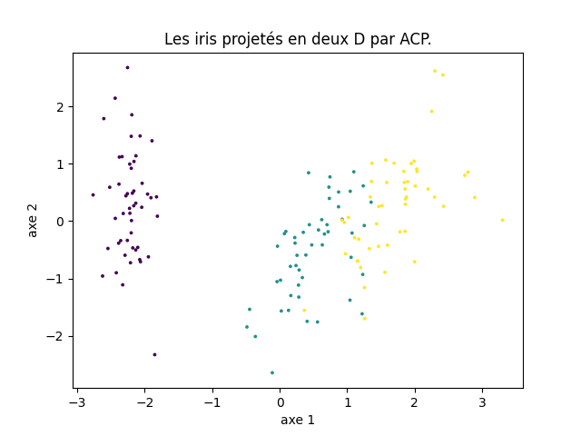

Réduction de dimension : éléments de correction
Dans ce TP, nous abordons la réduction de dimension d'un jeu de données, en particulier l'analyse en composantes principales, méthode très connue, très utile et très utilisée.
On pourra consulter mes notes de cours de fouille de données pour une présentation de la réduction de dimension (chapitre 11).
À l'issue de ce TP, vous m'envoyez par email un compte-rendu (format pdf) indiquant la réponse aux questions qui sont posées. Vous m'envoyez également un fichier python réalisant toutes les manipulations de ce TP : je dois pouvoir exécuter ce fichier en tapant python3 nom-de-votre-fichier.py et reproduire vos résultats. Cette exécution ne doit pas provoquer d'erreur de python. Remarque : un notebook ne convient pas.
Introduction
La réduction de dimension a pour objectif de diminuer le nombre d'attributs d'un jeu de données, en se concentrant sur des attributs réellement pertinents. D'un point de vue géométrique, son objectif est de déterminer le sous-espace (la variété) dans lequel les données vivent.
Là encore, à chaque fois que cela est possible, une exploration visuelle des données est essentielle pour anticiper et comprendre.
Analyse en composantes principales
Description de l'objet PCA de scikit_learn
On utilise la méthode PCA () de scikit_learn. Sous sa forme la plus simple, on l'utilise comme suit. On commence par créer un objet PCA :
acp = sklearn.decomposition.PCA ()
que l'on applique ensuite sur un jeu de données centrées réduites contenu dans une matrice X :
acp.fit (X)
Remarque : on peut utiliser un objet scaler() mais cette méthode est buggée : le calcul de l'écart-type est faux car la moyenne est estimée et non pas connue, donc le dénominateur doit être N-1 et non N, où N est le nombre de données. Si N est grand cela ne fait pas de grande différence ; si N est petit, il vaut mieux faire le centrage et la réduction « à la main ». Pour obtenir la valeur correcte de la variance, il faut ajouter l'option ddof = 1 à l'appel de la méthode numpy. var ().
L'objet acp contient différentes informations :
acp. explained_variance_contient les valeurs propres dans l'ordre décroissant. Ce sont donc les variances selon les différents axes principaux.acp. components_: chaque ligne contient un vecteur propre, donc une direction principale. Le vecteur en iè ligne correspond à la iè valeur propre.acp. explained_variance_ratio_contient la proportion de variance expliquée de chacun des axes principaux.
Mise en application
On va mettre en application l'analyse en composante principale sur un petit jeu de données disponible là. Il contient les caractéristiques de 10 élèves : leur taille, leur poids, leur âge et leur moyenne.
À faire :
- lire le jeu de données dans un tableau de données.
- centrer et réduire les attributs.
- Visualiser ce jeu de données : que voyez-vous ?
On fait les graphiques habituels et on ne voit pas grand chose.
- En réaliser l'ACP.
Faire ce qui a été expliqué ci-dessus.
Pour l'instant, on a fait des calculs qui n'ont pas beaucoup d'intérêt en tant que tel.
Nous abordons maintenant la partie vraiment importante : l'interprétation de ces calculs savants.
Commençons par observer et visualiser la proportion de variance expliquée par les composantes principales successives. Faites un graphique comme celui-ci :
acp.explained_variance_. Aucune difficulté.
Qu'en déduisez-vous ?
Une autre manière de représenter ces mêmes données consiste à visualiser le cumul de proportion de variance expliquée, comme ci-dessous :

acp.explained_variance_ratio_. Aucune difficulté.
On voit bien que le plan principal contient 80% de l'information, donc la projection dans ce plan est informative. Parfois, le plan principal comporte peu d'information (10, 20%). On en verra un exemple dans le travail en autonomie.
On peut ensuite visualiser les données dans les plans principaux. Les coordonnées des données dans l'espace factoriel sont obtenues par acp. transform (X).
À faire : représenter les données dans le plan principal et dans le plan défini par les axes principaux 1 et 3.
acp. transform (X). Donc, il suffit de faire des graphiques avec les colonnes 0 et 1 d'une part, les colonnes 0 et 2 d'autre part pour obtenir les représentations demandées.
J'obtiens cela :

Pensez-vous que le second graphique (plan principal 1x3) soit pertinent ?
Comme on l'a vu en cours, le fait de réduire la dimension déforme le nuage de points. Il faut donc calculer cette déformation pour chaque donnée et écarter ou du moins identifier les données dont la projection dans un plan principal n'est pas fidèle à sa position relative dans l'espace des données. Pour cela, on mesure le cosinus au carré de l'angle entre la demi-droite passant par l'origine et cette donnée d'une part et le plan principal que l'on considère d'autre part. Si ce cosinus au carré est inférieur à 0,3, la déformation est importante (angle > 57°).
À faire : sur le graphique précédent, identifier les points dont la projection est déformée et les affichez avec une couleur particulière.
J'obtiens cela :
Il faut déterminer le nombre de dimensions dans l'espace factoriel qui sont pertinentes. Pour cela, on utilise la proportion de variance expliquée par chacun des facteurs, autrement dit, les valeurs propres de la décomposition spectrale. Le creux du coude indique ce nombre.
À faire : faire un graphique indiquant la proportion de variance expliquée. Déterminer la dimension de l'espace factoriel.
Les axes principaux correspondent à des combinaisons linéaires des attributs originaux. La corrélation entre ces axes et les attributs originaux indique l'information que contient chaque axe principal par rapport aux attributs initiaux. On peut calculer, afficher et analyser ces nombres. On peut aussi réaliser le cercle de corrélation. Le faire.
J'obtiens cela :

Pour tracer un cercle de rayon 1, on peut calculer les coordonnées de des points de ce cercle tous les degrés (cosinus et sinus des angles variant de 0 à 2π) et afficher ces 360 points.
Petit truc : pour que le cercle ressemble à un cercle et non pas à un ovale, il faut spécifier
ax. set_aspect (1) qui fait en sorte que la longueur correspondant à une unité soit la même horizontalement et verticalement.
Sur ce cercle, on voit une forte corrélation positive entre le premier axe factoriel et la moyenne de l'élève (0,83) et une forte corrélation négative avec son poids (-0,79). Le premier axe est également assez fortement corrélé avec l'âge (-0,69) et la taille de l'élève (-0,78), lesquels sont assez corrélés avec le second axe. Avec des coefficients de corrélation aussi élevés entre les 4 attributs décrivant les élèves et le premier axe factoriel, la projection des points dans le plan principal est une représentation assez fidèle de la réparition des points dans l'espace initial à 4 dimensions.
Si on identifie par leur numéro les élèves dans leur projection dans le plan principal comme ci-dessous :

(c'est le même graphique que plus haut, mais ici les élèves sont repérés par leur numéro), on peut combiner cette projection avec le cercle de corrélation pour effectuer les observations suivantes :
- les élèves 1, 2 et 3 ont une bonne moyenne (axe 1 fortement corrélé avec la mopyenne) mais sont plus plutôt plus petit, moins lourd et moins âgés que les autres (car cet axe est corrélé négativement avec ces 3 attributs).
- Inversement, les élèves 4, 5, 6, 7 et 10 ont plutôt une moyenne plus faible mais sont plus âgés, plus lourds et plus grands.
- Par sa position au centre du graphique, coordonnée positive sur l'axe 1 et coordonnée légérement négative sur l'axe 2, l'élève 8 a une note légérement supérieure à la moyenne des élvèes (coordonnée sur l'axe 1 positive), il est plus âgé que la moyenne, plus grand et plus lourd. Comme on l'a vu plus haut, sa position dans la projection sur le plan principal n'est pas fidèle à sa position vis-à-vis des autres élèves dans l'espace à 4 dimension.
- L'élève 9 a une position très excentrée. Il a une note très supérieure à la moyenne (major de promo), il est l'un des plus âgés, tout en étant petit par rapport à la moyenne. Quoiqu'en position excentré, sa position dans le plan principal reflète fidélement sa position vis-à-vis des autres élèves dans l'espace initial à 4 dimensions.
- Ces deux derniers exemples montrent que la position dans le graphique ne donne pas d'information sur la fidélité de la projection : l'élève excentré (9) est bien atypique par rapport aux autres, alors qu'un élève en plein centre de la projection (8) est lui mal représenté dans le plan principal.
Activités en autonomie
Appliquer ce qui vient d'être expliqué aux jeux de données suivants :
- Les iris qui sont disponibles dans scikit_learn en faisant
sklearn.datasets.load_iris ().data. Faites-en une ACP. Quand vous visualisez les iris, il est intéressant d'utiliser une couleur différente pour chacune des classes.Fraction de variance cumulée :

Il est clair que deux composantes fournissent une représentation très fidèle des iris.
La projection des iris dans le plan principal (la couleur indique la classe) est donc très représentative.

En calculant la déformation (cosinus), on voit qu'une seule donnée est projetée avec une déformation importante. - Réalisant une projection de données dans un plan, l'ACP permet de visualiser dans le plan des données décrites par de nombreux attributs. C'est ce que nous faisons pour ce jeu de données et le suivant.
Ce fichier contient une matrice qui indique la distance routière entre chaque couple parmi 21 villes européennes. À partir de ces distances, on aimerait obtenir une visualisation en 2 dimensions de la position des villes les unes par rapport aux autres. Projeter ce jeu de données dans le plan principal : chaque donnée correspondant à une ville, afficher le nom de la ville à sa position dans le plan principal. Vous devez obtenir un graphique comme celui-ci :
Attention, ce graphique n'est absolument pas celui que vous devez obtenir. Je l'indique juste pour vous montrer le type de graphique attendu : la position des villes dans le plan.
Que constatez-vous ? (Bien sûr, on aimerait que la position des villes corresponde à peu près à leur position sur une carte géographique.) Comment pouvez-vous déterminer si cette représentation en 2D est fidèle au jeu de données ?On obtient cette figure :
Le résultat est cohérent par certains côtés, incohérent par d'autres. Le bas de la figure est plutôt correct mais trouver Cherbourg à côté de Paris et Genève ne l'est pas. De même pour Milan entre Calais et Bruxelles, ou Vienne entre Hambourg et Copenhagen. En rouge est indiquée la seule anomalie détectée par le cosinus.
la proportion de variance cumulée indique qu'il faut utiliser 3 ou 4 dimensions pour obtenir une représentation correcte.

D'après vous, quels sont les problèmes rencontrés sur ce jeu de données pour réaliser une projection en 2D fidèle à la réalité à l'aide d'une ACP ?
Remarque : outre les problèmes auxquels je vous encourage de réfléchir que je mentionne ci-dessus, il faut savoir qu'une matrice de distances entre objets est un objet mathématique particulier et que pour en réaliser une ACP, la méthode est légérement différente de celle que l'on a vue qui concerne les données tabulaires (des individus décrits par des attributs). J'ai posé cet exercice parce que néanmoins, il est intéressant que vous rencontriez ce type de données et, on peut toujours essayer d'en faire une ACP. C'est aussi le problème de la science des données : une méthode, même si elle n'est pas adaptée, donne toujours un résultat. Seulement, si la méthode n'est pas adaptée (et ce n'est pas toujours évident de savoir si une méthode est ou non adaptée à un type de données ou pour étudier une certaine question), on obtient un résultat qui n'a pas de sens. - Ce fichier contient une matrice qui indique le nombre d'occurrences de chacune des 26 lettres de l'alphabet latin dans un même texte (issu de la constitution européenne) traduit dans 19 langues européennes. Il est intéressant d'en faire une ACP et de projeter les langues dans le plan principal afin de visualiser leur proximité en terme de fréquence d'apparition de chacune des lettres. Par contre, pour ce jeu de données, il faut réaliser un pré-traitement des données pour que l'ACP ait un sens : lequel ?
Le nombre d'occurences des lettres n'a pas de sens. Ce qui a un sens est leur fréquence d'apparition. Il faut donc transformer les effectifs en fréquence. Pour chaque langue, on divise donc les effectifs des 26 lettres par le nombre total de lettres composant le texte dans cette langue.
Comme ci-dessus pour les villes, afficher le nom des langues. En fonction de vos connaissances (même limitée) en linguistique, cette projection en 2D vous paraît-elle pertinente ? Il est également intéressant de projeter les lettres dans le plan principal pour visualiser leur proximité en fonction de leur utilisation dans ces 19 langues européennes. Faites le graphique correspondant. Comment pouvez-vous déterminer si cette représentation en 2D est fidèle au jeu de données ?Il n'y a aucune difficulté, c'est toujours la même chose.
Pour les langues, j'obtiens la proportion de variance cumulée et la projection dans le plan principal ci-dessous.

Le graphique de gauche indique très clairement que la projection en deux dimensions a peu de chance d'être fidèle. En rouge sont indiquées les langues qui sont mal projetées dans le plan principal (« mal » projetés au sens du cosinus). Trouver parmi celles-ci le hongrois (hu) n'est pas très étonnant car on sait que la langue hongroise n'est pas une langue indo-européenne ; par contre, c'est vrai aussi du finnois qui lui est correctement projeté. Le français et l'italien, deux langues très proches, sont mal projetées dans le plan principal. Par contre, voir un regroupement allemand, danois, néerlandais et anglais est cohérent. Mais ce graphique est à interprêter avec la plus grande prudence étant donné le graphique de gauche.
On procède de la même manière pour les lettres. J'obtiens la proportion de variance cumulée et la projection dans le plan principal ci-dessous.

Cette fois-ci, le graphique de gauche indique très clairement que la projection en deux dimensions est assez fidèle. En rouge sont indiquées les lettres qui sont mal projetées dans le plan principal. - En classification supervisée, il arrive parfois que le taux de succès augmente quand on pré-traite les données au moyen d'une ACP. Tester cette idée sur les iris. Que constatez-vous ?
Là encore, aucune difficulté. On constate que l'arbre construit avec la représentation factorielle des iris obtient un score (légérement) meilleur que celui construit avec les attributs originaux.